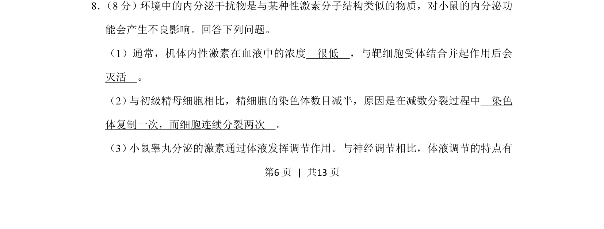
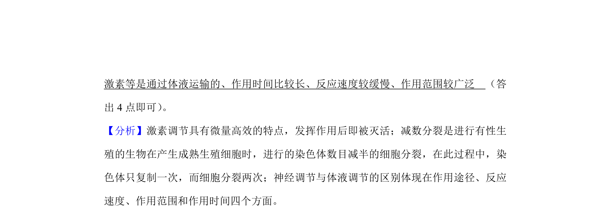
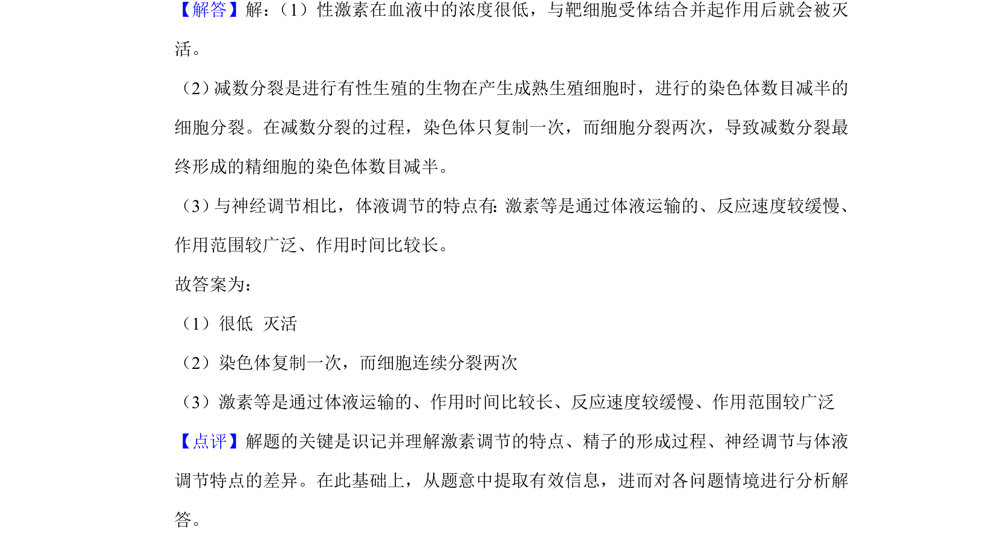

考点：性激素 体液调节 减数分裂 激素作用特点


性激素的作用特点及体液调节特点，结合减数分裂染色体数目减半原因

📄 原 PDF 第 6 页：
素材/真题/吉林/2008-2024·（吉林）生物高考真题/2019年高考生物试卷（新课标Ⅱ）（解析卷）.pdf
8． （8分）环境中的内分泌干扰物是与某种性激素分子结构类似的物质，对小鼠的内分泌功 能会产生不良影响。回答下列问题。 （1）通常，机体内性激素在血液中的浓度 很低 ，与靶细胞受体结合并起作用后会 灭活 。 （2） 与初级精母细胞相比，精细胞的染色体数目减半，原因是在减数分裂过程中 染色 体复制一次，而细胞连续分裂两次 。 （3） 小鼠睾丸分泌的激素通过体液发挥调节作用。与神经调节相比，体液调节的特点有